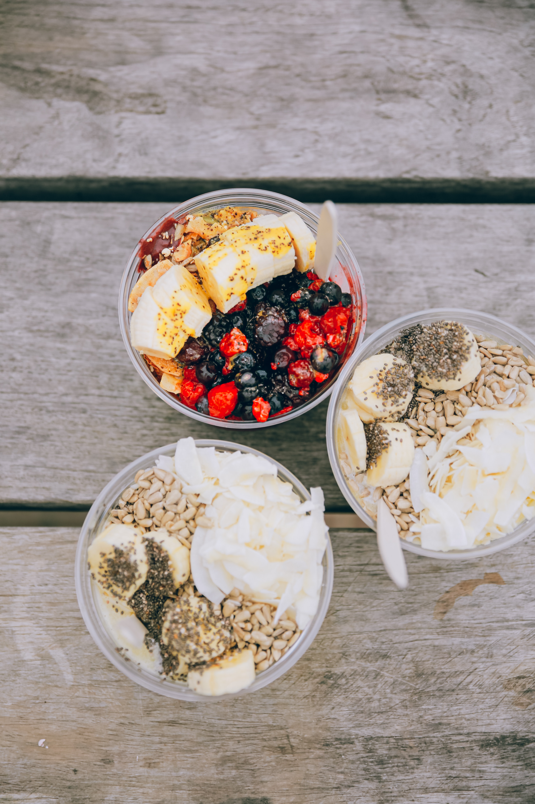

Breakfast
- Vegan pancackes
- 1/4 cup berries fresh
- Rolled oats with cashew milk or coconut milk with fresh berries, almond or peanut butter with chia seeds and a pinch of cinnamon
Mid Morning Snack
- Apple slices with natural peanut butter and cinnamon
- Plant-based yoghurt alpro
- Vegan smoothies: 1 banana + 1 cup berries + 1 cup spinach + non dairy milk

Lunch
- Baked sweet potatoes with vegetables
- Baked beans with brown bread

Mid Afternoon Snack
- Gluten free cookies
- Unsweetened yoghurt topped with pecans and chocolate chips

Dinner
- Buddha Bowl - cooked and raw vegetables of your choice + tofu and grains
- Burrito Bowl - red pepper (diced) + 1 cup of black beans + 1/2 cup diced tomatoes + green onion and a handful of leafy greens